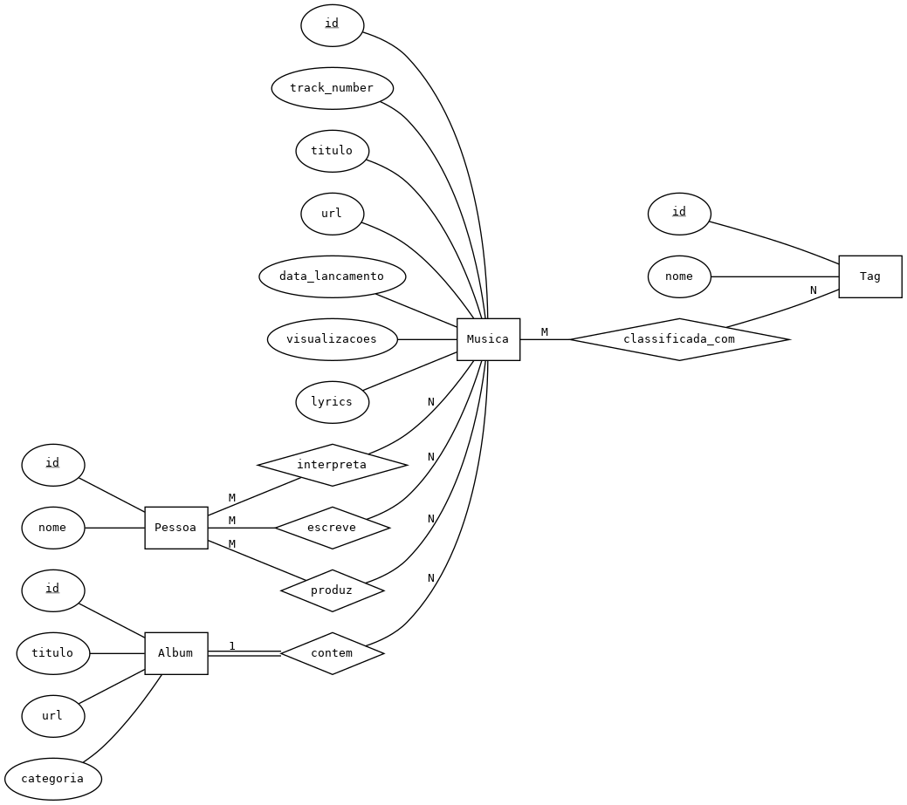
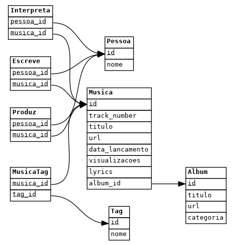

Projeto feito no âmbito de Bases de Dados (CC2005)
Base de dados relacional sobre a discografia de Taylor Swift: álbuns, músicas, artistas, escritores, produtores e tags.
python3 --version # Python 3.9+
pip3 install Flask pandasgit clone https://github.com/andrefmonteiro/taylor-swift-database.git
cd taylor-swift-database
python3 populate_db.py # Opcional - BD já vem populada
python3 server.pyAceder: http://localhost:9000

Entidades: Album, Musica, Pessoa, Tag
Relacionamentos: Album 1:N Musica, Pessoa M:N Musica (Interpreta, Escreve, Produz), Musica M:N
Tag

Tabelas: Album, Musica, Pessoa, Tag, Interpreta, Escreve, Produz, MusicaTag
3ª Forma Normal - sem dependências funcionais transitivas
/{tabela}/ - Lista todos os registos/{tabela}/<id> - Detalhes de um registo/album/, /album/1/songs_album/ - Músicas por álbum/only_taylor_writer_songs/ - Músicas só da Taylor Swift/top_ten_views/ - Top 10 mais visualizadas/songs_per_year/ - Músicas por ano/songs/<word>/ - Busca por palavra nas letras/songs_views/<n>/ - Músicas com mais de N visualizações/artist_more_one/ - Colaboradores da Taylor Swift